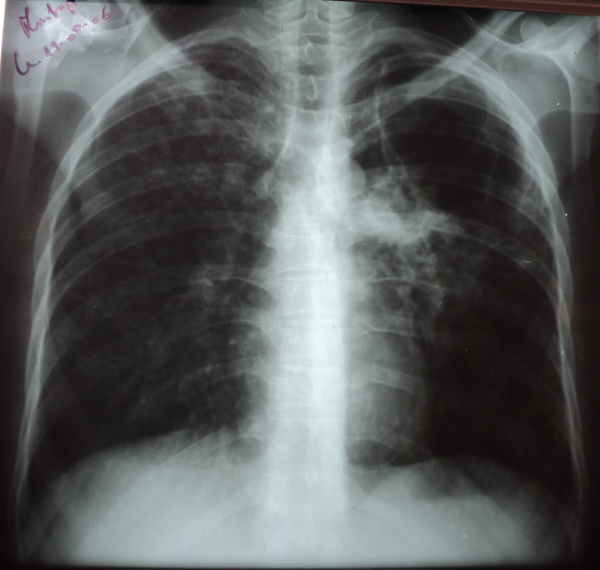

Cas clinique N°8
Patient de 28 ans, sans antécédents pathologiques particuliers, présente depuis une année une toux productive chronique avec des hémoptysies minimes dans un contexte d’amaigrissement non chiffré. L’évolution est marquée par l’installation depuis une semaine de façon brutale d’une dyspnée de repos avec des douleurs thoraciques gauches et une fièvre non chiffrée.
A l’examen clinique :
* Un état général altéré.
* Température à 38,2 °C
* Polypnée à 40 cycles/minute avec mise en jeu des muscles respiratoires accessoires.
* Tympanisme de la moitié supérieure de l’hémithorax gauche avec des râles ronflants et crépitants à prédominance gauche.
Questions:
Question 1: Décrivez l’anomalie thoracique.
Question 2: Quelle est votre conduite à tenir thérapeutique?
Question 3: A la fin de traitement la températuree a baissé, la dyspnée s’est amélioré mais le patient garde toujours la toux productive, les hémoptysies et les douleurs thoraciques, quelle est votre conduite à tenir ?
